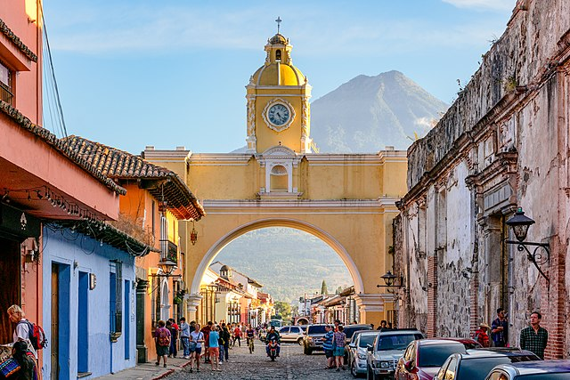

Antigua Guatemala
Fundada el 10 de marzo de 1543, La Antigua Guatemala fue declarada Patrimonio Cultural de la Humanidad
por la Unesco en el año 1979. Esta bella y mágica ciudad colonial guarda casi quinientos años de historia,
con un clima privilegiado y una excepcional vista hacia los volcanes de Fuego y Acatenango.
Fue construida en el Valle de Panchoy y nombrada la tercera sede de la capital de Guatemala.
En esta ciudad el tiempo se detuvo y quedó atrapado en las gruesas paredes de sus templos,
sus monasterios y sus casas coloniales. Esta colorida población aún conserva
edificaciones restauradas del siglo XVI y puede ser recorrida a pie a través de sus calles empedradas. Desde el Cerro de la Cruz, ubicado al nororiente de la urbe, La Antigua Guatemala se ve impresionante.
Admirable es también el emblemático Volcán de Agua, que ha sido testigo de las
glorias y caídas de la población. La belleza de esta ciudad radica en cada uno de sus detalles.
Los que la visitan quedan maravillados con sus atractivos históricos, antiguos templos
y monasterios que forman parte de su legado.
Luego de haber sufrido varios terremotos, ha permanecido detenida en el tiempo y
es admirada por sus calles empedradas, casas coloniales, monumentos civiles, leyendas y tradiciones.
Los principales atractivos turísticos de la Antigua son El Palacio de los Capitanes Generales,
El Convento y Arco de Santa Catalina, La Plaza Mayor, El Museo de Jade,
La Antigua Catedral de Guatemala, el museo de la Universidad de San Carlos,
la Ruta Santa del Hermano Pedro, entre otros. La ciudad también
es rica en artesanías tales como tejidos típicos,
cerámica, productos de plata y oro, cerería, productos metálicos, dulces típicos y gastronomía.
Para llegar a La Antigua Guatemala desde la Ciudad de Guatemala debe tomar la carretera CA-1,
saliendo por la Calzada Roosevelt, pasando por San Lucas Sacatepéquez
y girar hacia la derecha. La Antigua está situada a 40 Kilómetros del centro de la ciudad capital.
